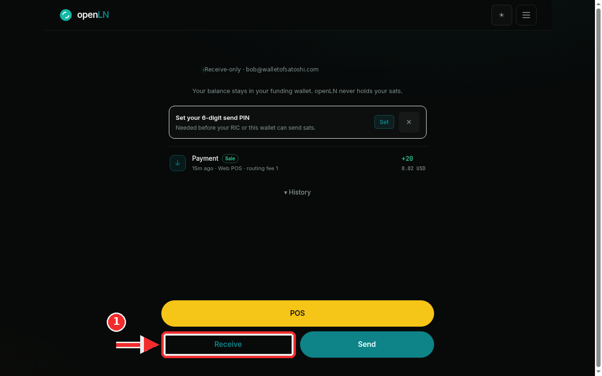
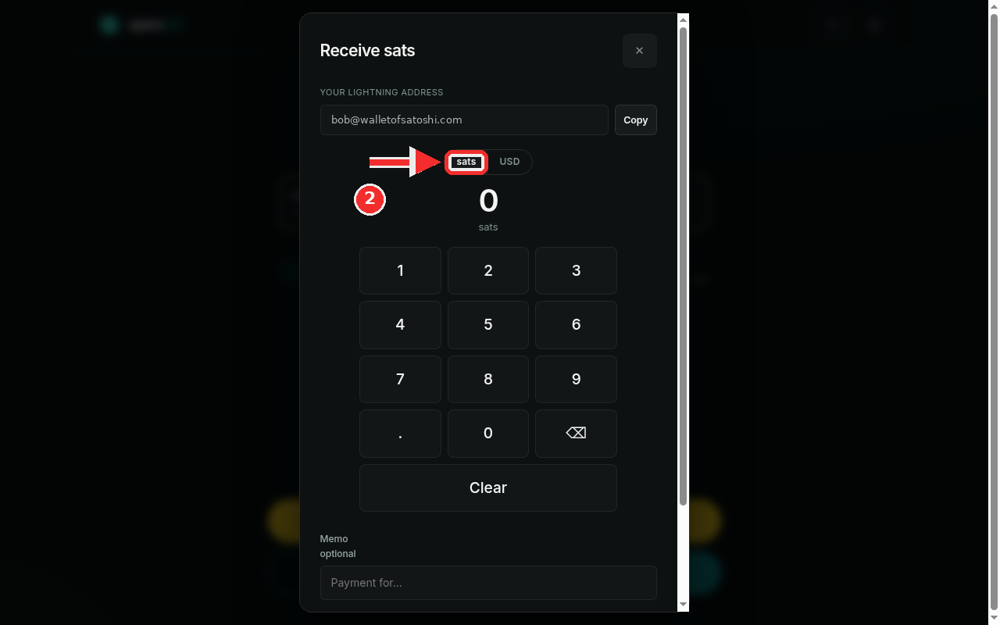
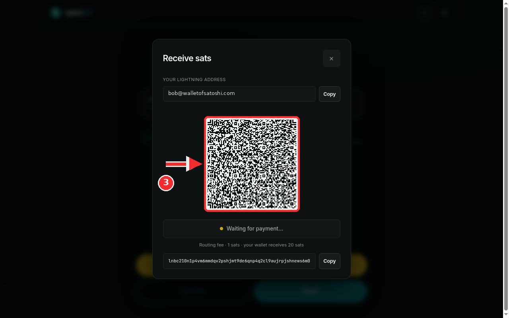
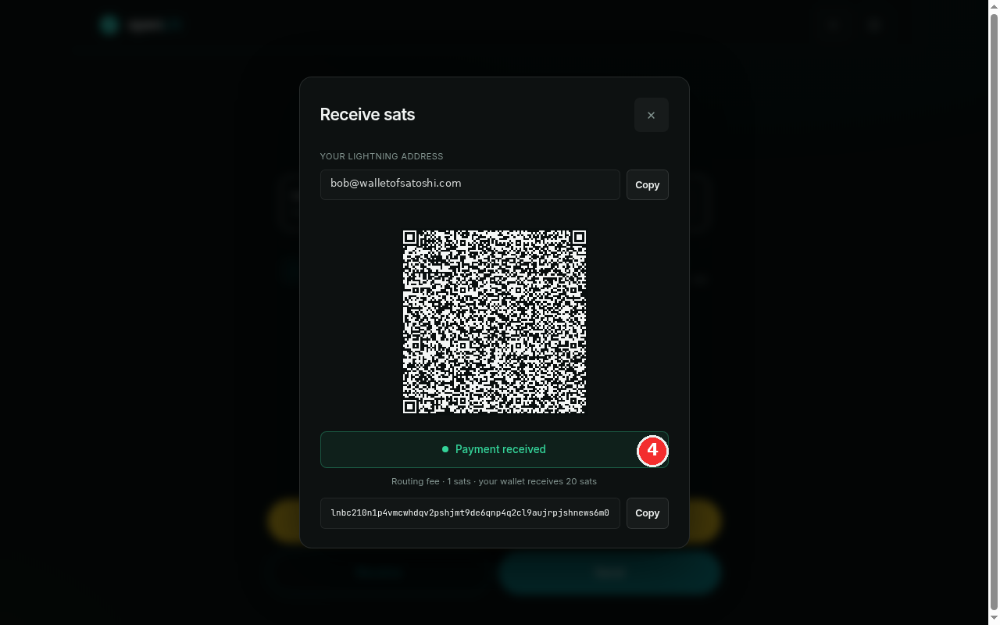

How to receive sats with an invoice
An invoice is how you ask someone to pay you in sats. This guide walks through the whole flow in the openLN app: press Receive, set the amount on the keypad, create the invoice, then show its QR code or send the invoice text to the customer. The screen tracks the payment for you and says exactly how many sats your wallet will receive. The whole thing takes less than a minute.
- You are signed in to your openLN account (any device, phone or computer).
- A wallet is connected to receive into. This guide uses an account that receives into its Wallet of Satoshi Lightning Address,
bob@walletofsatoshi.com. If no wallet is connected yet, the Receive button opens the connect dialog instead, so connect one first. - Creating an invoice costs nothing and moves no money. The sats arrive only when the customer pays, and they go into your own wallet. openLN never holds your sats.
Press Receive on the Wallet view
Open the Wallet view and look at the bottom of the screen. The big yellow POS button is at the top of that block, and directly under it sit Receive and Send side by side. Press Receive. The Receive sats dialog opens straight away. If no wallet is connected yet, the same press opens the connect dialog instead: that means there is nowhere for the sats to land, so connect a wallet before you take payment. Above the buttons, the screen names the wallet your money lands in, tagged Receive-only, and prints the custody rule plainly: "Your balance stays in your funding wallet. openLN never holds your sats."

Set the amount and choose the Books class
The dialog is called Receive sats. At the top, the YOUR LIGHTNING ADDRESS row shows the address the money will land on, bob@walletofsatoshi.com in this account, with a Copy button that is handy for a regular customer who pays you address to address. Under it, the Sats / USD toggle picks the unit you are working in: the invoice is always a sats invoice, but you can type and read the amount in sats or in your account's display currency, and the choice is remembered on this device. If your account is already set to sats, the toggle is not shown. The keypad below the amount sets the figure: each tap appends a digit to the number above it, the backspace key removes one digit, and Clear starts over. For this example, tap 2 then 1 to make it 21 sats. Under the keypad, Memo is optional: a short note like "coffee" or "order 12" travels with the payment and shows up when you look back at it. The Books selector decides how the payment is classified in your books, and it is worth a moment of thought. Sale: a customer is paying me is for money you are earning: a drink, a plate of food, a service. Top-up: my own funds, not income is for moving your own sats in, which is not a sale and must not read as income. The app remembers the last class you picked on the device. The dialog scrolls, so scroll down a little if the selector is not on screen yet. When the amount and the class look right, press Create invoice.

Show the QR or send the invoice
Creating the invoice moves the dialog to the payment screen. The QR code is the invoice: a customer in front of you points their phone camera at it, checks the amount, and pays from any Lightning wallet. If the customer is somewhere else, press Copy next to the invoice text under the QR, the lnbc string, and send it in a chat, a text message or an email; the customer pastes it into their wallet and pays the same invoice. The Copy button on the address row at the top still works too, for paying address to address. While you wait, the status line under the QR reads Waiting for payment... and the app checks for the payment on its own, so there is nothing to refresh. The line under the status tells you exactly what will arrive: Routing fee · 1 sats · your wallet receives 20 sats. That 1 sat routing fee is the cost of openLN's wrapped settlement, which delivers the payment straight to your saved wallet; the remaining 20 sats reach the wallet you connected, and openLN never takes custody of your sats at any point. The payout number is on screen before anyone pays, so it is never a surprise. You can also close the dialog while you wait: that cancels nothing, and the invoice simply stays valid until it expires.

Payment received: the sats are in your wallet
When the customer pays, the status bar turns green and reads Payment received, with the fee line under it confirming the amounts that landed: the 1 sat routing fee and the 20 sats that went into the wallet in this example. Close the dialog when you are done with the customer. The sale now appears in your wallet activity on the Wallet view, tagged Sale with the routing fee noted, and in Books it is recorded under the class you picked, so a sale counts as income and a top-up does not. That is the full loop: press Receive, set the amount, create, get paid.

- Closing the dialog cancels nothing. The invoice stays valid on its own until it expires, so you can pocket the phone or switch apps while you wait. If it expires unpaid, the screen switches to Invoice expired and you simply create a fresh one; nobody was charged either way.
- One invoice, one payment. The
lnbctext is the invoice itself, and a single payment fills it, so create a new invoice for the next sale. Copying it for a chat works because any Lightning wallet can open the pasted text the same way it scans the QR. - Sale or top-up matters. Top-ups and transfers are your own money moving, not income, which is why the Books class you pick keeps your takings honest. The app remembers the last class you used on this device.
- Your sats stay yours. Every wrapped sale shows its routing fee and payout in advance, and settles straight into the wallet you saved. openLN never takes custody of the money at any point.